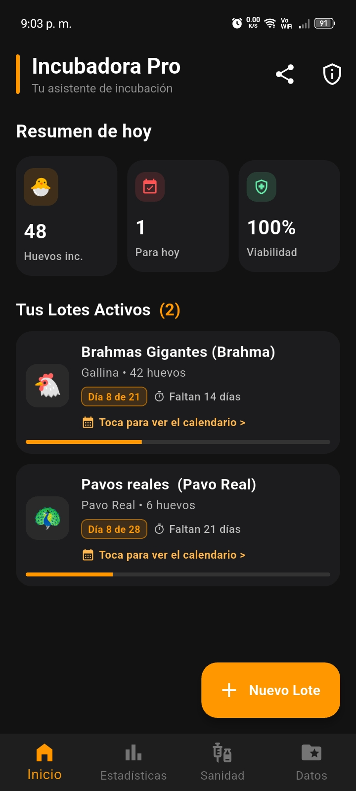
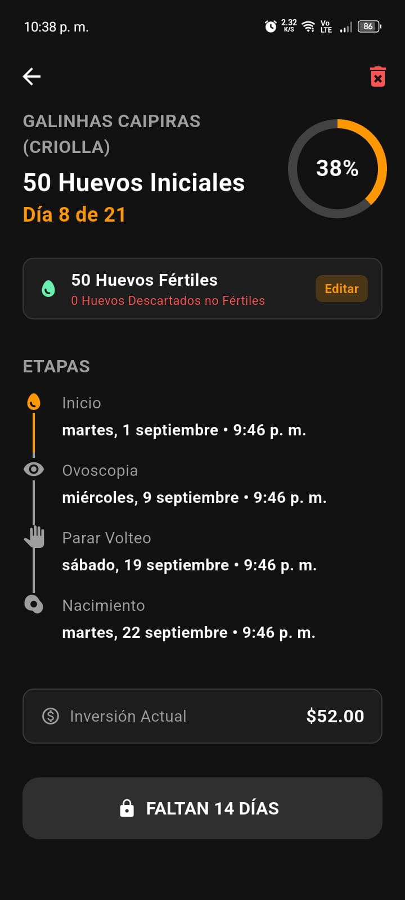
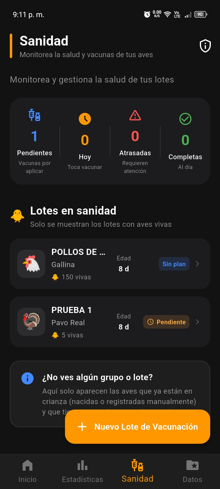
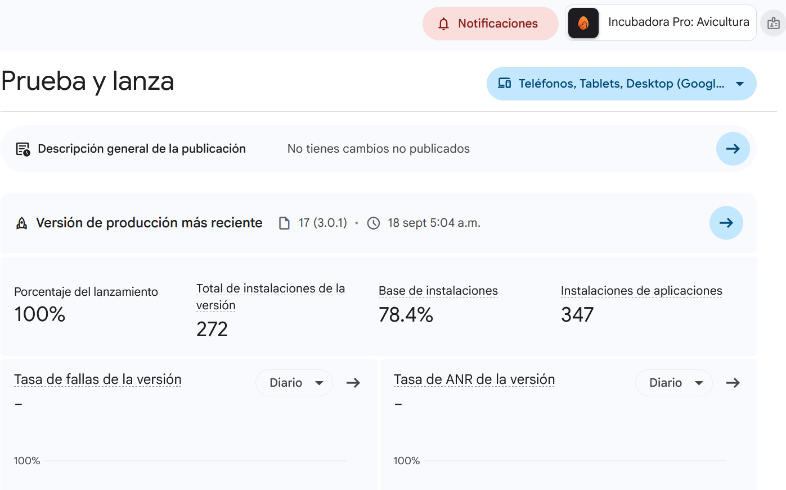
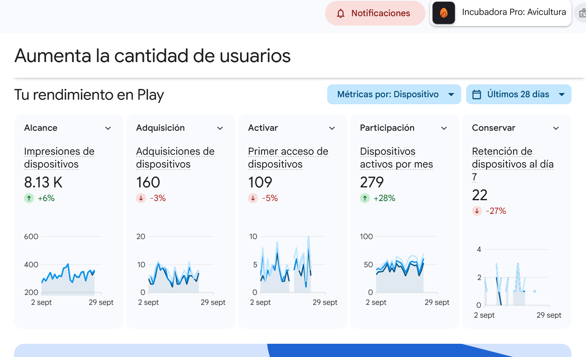
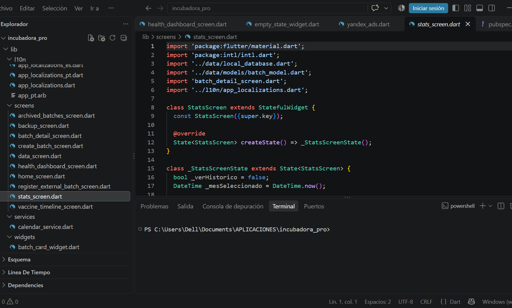

Incubadora Pro: Avicultura
Sistema Móvil de Gestión Avícola
1. Resumen del Proyecto
| Rol | Desarrollador Mobile Independiente (Arquitectura, UI/UX, Desarrollo y Publicación). |
| Tecnologías Principales | Flutter, Dart, Arquitectura Offline-first. |
| Herramientas | Visual Studio Code, Android Studio. |
| Monetización | Integración de redes publicitarias (Yandex Ads, Unity LevelPlay) mediante mediación. |
| Fecha de Publicación | Julio 2026 |
| Estado | Publicada en producción en Google Play Store (ofuscación de código R8 habilitada). |
2. Arquitectura y Retos Técnicos
- Arquitectura Offline-First: La aplicación está diseñada para funcionar sin conexión a internet, garantizando que los avicultores en zonas rurales puedan gestionar sus lotes, calcular tiempos de ovoscopia, paradas de volteo y nacimientos sin depender de la conectividad.
- Optimización de Rendimiento (Android Vitals): Identificación y resolución de cuellos de botella en la memoria RAM (errores ANR por Input dispatching timed out) en dispositivos de gama media. Implementación de técnicas de downsampling y control de caché de imágenes interactuando directamente con el motor BitmapFactory de Android para mantener 60 FPS en el renderizado.
- Gestión del Ciclo de Vida y Empaquetado: Configuración avanzada de Gradle (AGP 8.7.0), resolución de dependencias de terceros y ofuscación de código para cumplir con los estándares de seguridad y peso del Android App Bundle (.aab) exigidos por Google.
3. Diseño de Interfaz (UI/UX)
Interfaces limpias orientadas a la experiencia del usuario, el manejo de listas dinámicas y visualización matemática de fechas.

Dashboard Principal

Cálculo de Cronograma

Módulo de Sanidad (UX)
4. Gestión en Producción (Google Play Console)
Administración directa de despliegues, métricas de rendimiento y ecosistema de monetización bajo la cuenta de desarrollador Jordi Pro.

Gestión de Versiones y Despliegues en Producción

Análisis de Rendimiento y Monetización Activa

Métricas Generales y Retención de Usuarios
5. Logros y Resultados
- Adopción del producto: La aplicación ha alcanzado 756 instalaciones totales, validando la necesidad del mercado avícola.
- Alta retención: Mantiene un crecimiento constante con un promedio de 330 dispositivos activos y 273 usuarios activos por mes (MAU), lo que demuestra la utilidad continua del software.
- Excelente recepción: Ostenta una calificación impecable de 4.87 estrellas en Google Play, reflejando una excelente Experiencia de Usuario (UX) y estabilidad.
- Estabilidad técnica: Resolución proactiva de problemas de compatibilidad y optimización de Android Vitals, logrando reducir la tasa de fallas (crash rate) prácticamente a cero.